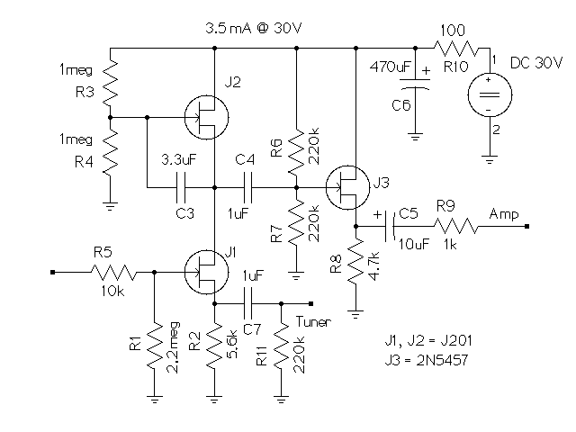

This is to be my plug and play bass preamp to use with a power amp and cab at a rehearsal space. (Rehearsal space being a fancy name for the singers basement.)
It met all the goals except the gain. The actual gain is closer to 17dB.

It is a mu-amp/mini-booster with a buffered output. There where two major problems. One, taming the high gain to keep the preamp from distorting. And two, handling the low input impedance of the power amp.
The buffered output is the solution, or part of it, for both problems. The mu-amp cannot handle driving a low output impedance. My initial design was just a mu-amp and I got roughly unity gain.
So I added the 2N5457 output buffer and solved that problem. By selecting low values for R6 and R7 it reduces the gain of the mu-amp without completely killing it. I tried 100k but that affected the tone. So 220k seems to be the lowest practical value.
I also increased the source resistor, R2, of the lower JFET from 1k to 5.6k to help tame the distortion. I feel that 10k would have been even better, but I never got around to swapping a 10k in. 10k would drop the gain to roughly 15dB.
The switch to 30V really helped. I was originally going to use 12V but testing showed the higher voltage really helped. So I bought a cheap 24V 200mA DC wall wart. When I measured the current, the mu-preamp was drawing 3.5mA @ 30V.
One of the big advantages to the mu-amp, and probably the main reason I kept at getting this going, is that it handles bad power supplies very well. All the other transistor based designs I tried produced a very noticeable hum with the 24V wall wart. The mu-preamp is completely quiet.